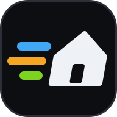

HouseRunner BETAAutomatic setup
An experiment: HouseRunner makes your Google Sheet and switches it on for you – no copying, no Apps Script, no Deploy. It makes a new Sheet in your Google Drive and doesn’t touch any HouseRunner you already have.
This is a test version. If it gets stuck, the normal setup is at houserunner.app/setup.